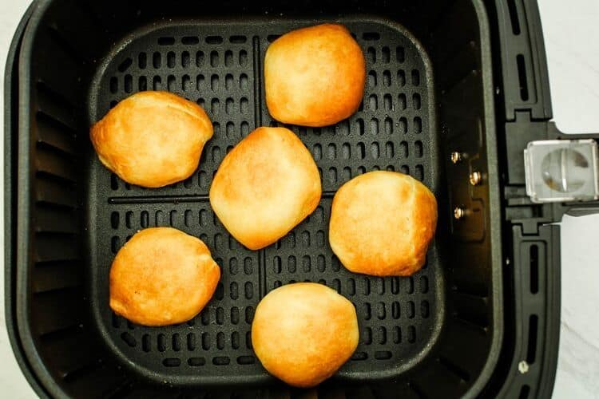

Air Fryer Fried Oreos

Description
The absoulte peak of comfort food, unlikely to help you reach any health goals...though the dopamine boost may keep you going for a bit more.
Ingredients
- 1 package of Pillsbury Crescent Rolls
- 8 Oreos
Instructions
- Find a clean surface.
- Unroll the crescent roll dough onto said clean surface.
- Cover one Oreo at a time with the crescent roll dough, collect the excess to potentially use it on another cookie.
- After all cookies are covered: Preheat your air fryer to 320F. If your air fryer does not allow for specific temperature controls, put it on air fryer mode.
- Place the cookies inside of the air fryer if it has a basket, and ensure that they do not touch. If you lack a basket, but have a tray: Oil a large enough section of parchment paper, and place the cookies on that prior to placing them on the tray.
- Allow them to cook until they are golden brown on the outside.
- Remove the cookies, and allow them to cool for 3 minutes.